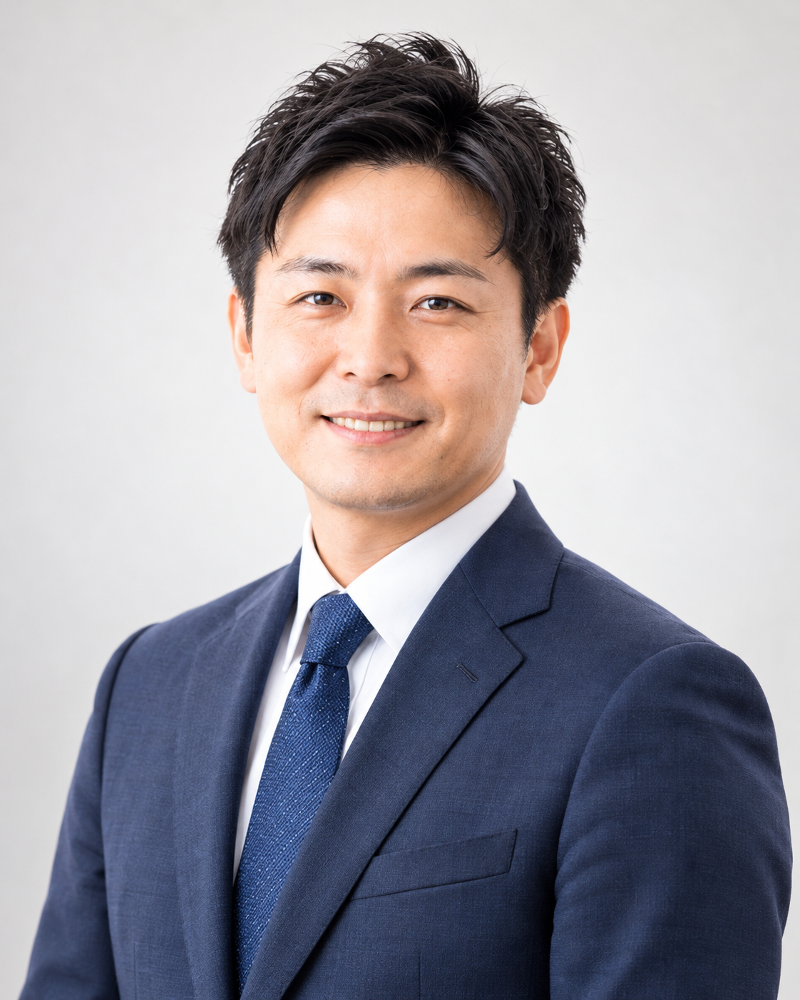

まず、社長のお話を伺います
今どんなことに困っているのか、これからどうしていきたいのか。数字を確認する前に、お話をお聞きします。
ABOUT US
税理士・大宮省吾のご紹介と、当事務所が大切にしていること。
GREETING

税理士 大宮 省吾おおみや しょうご
はじめまして。大宮省吾税理士事務所の大宮省吾です。
私は東京の税理士事務所で経験を積み、41歳で独立しました。独立を機に地元の大阪へ戻り、大阪市中央区に事務所を開設しました。
勤務時代は、建設業をはじめ、製造業、卸売業、小売業、IT、サービス業など、さまざまな中小企業を担当してきました。税務申告だけでなく、日々の経理や資金繰り、融資の相談にも向き合ってきました。
現在は、その経験を生かし、大阪の建設会社の支援に力を入れています。
大切にしているのは、数字を説明して終わりにしないことです。
「この工事、売上は大きいですけど、利益がどれくらい残るか一緒に見ましょう」
そんなふうに、社長と同じ数字を見ながら、状況を確認していきたいと思っています。
私自身も、一人で事務所を経営する立場です。自分で判断し、会社を動かしていく責任には、日々向き合っています。
聞きづらいことも話せる、身近な相談相手でありたい。その思いを大切に、一社一社のご相談に対応します。
SPECIALTY
建設会社では、工事ごとに売上や費用が異なり、入金と支払いのタイミングも一定ではありません。仕事を受注できていても、工事ごとの利益や手元資金の状況が見えにくいことがあります。
これまで建設会社を担当する中で、こうした数字を整理することが、社長の判断を支えると感じてきました。
幅広い業種で培った経験を土台に、建設会社の課題に、より深く向き合っていきたい。その考えから、建設業を専門として打ち出しています。
以前からお付き合いのある、他業種のお客様への支援も引き続き大切にしています。
OUR PROMISE
今どんなことに困っているのか、これからどうしていきたいのか。数字を確認する前に、お話をお聞きします。
専門用語が必要な場合も、具体例を交えながら説明します。分からないことは、何度でもお尋ねください。
前回のお話を踏まえ、会社の変化を一緒に確認していきます。
PROFILE
OFFICE